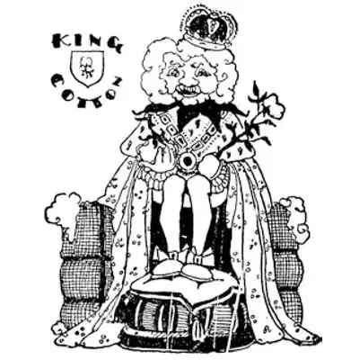

11
The Father of Waters
河流之父

THE biggest bay in the United States I told you is called “the Mother of Waters.” The biggest river in the United States is called “the Father of Waters.” Although the river is called a “father,” he is not a Mr. He is a “Miss.” In the Indian language he is Miss —issippi, and is spelled in this jingly way:
M
i double s
i double s
i double p
i
which is very easy to learn.
If I asked you to draw a picture of a river, and also of a tree without any leaves on it, you would probably draw the tree this way—a main stem, with big branches, and big branches with little branches, and little branches with tiny branches—like the picture to the left. And you would probably draw the picture of the river as just a wiggly line—now wouldn’t you? As a matter of fact, the picture of a tree and the picture of a river should be drawn exactly the same way, for they each have a main stem with big branches, big branches with little branches, and little branches with tiny branches—although you may not see all the branches in the picture of a river on the map.
But there is this big difference between a tree and a river:
A tree grows from the bottom to the top of its branches.
A river flows from the top of its branches to the bottom. The sap runs up a tree, water runs down a river. If a river were just a single line and had no branches at all, it would be just as big at the finish as at the start. It’s the river’s branches that make it bigger and bigger. The biggest river in the United States, the Mississippi, starts almost at the top of our country, at a little lake called Itasca, in the State of Minnesota, and flows all the way to the bottom of our country, getting bigger and bigger all the time as its branches flow into it, until at last it reaches a corner of the ocean we call the Gulf of Mexico. The Mississippi River really cuts our country into two parts, but the two parts are not the same size. The part west of the Mississippi is about twice as big as the part east of the Mississippi.
The Mississippi River hardly gets a good running start on its long journey south to the Gulf of Mexico before it falls down, and where it falls men have built big mills, the wheels of which are turned by the falling water. These mills, however, are not like those in New England. They do not make things. They grind wheat to make flour to make bread, for more and better wheat grows near where the Mississippi starts and the States near-by than anywhere else in the whole World.
An acre seems to me, who lives in a city, a large piece of ground, a hundred acres seems immense, and a thousand acres seems enormous, but some farms in Minnesota where they raise wheat have as many as ten thousand acres of wheat in a single farm! The farmers would never get through planting or gathering the wheat if they did so by hand or even with a horse. So they plow with an engine and often with ten plows in a row, and they use machines for gathering the wheat and for separating the grains of the wheat from the straw, which has to be done before it can be ground into flour.
On opposite sides of the Mississippi near these falls two large cities of almost the same size have grown up. These two cities are connected by a bridge, and they are so nearly the same size they are called Twin Cities. One of them is named Minneapolis, which means “Water City,” as Annapolis means “Anna’s City”; and the other is named St. Paul. Notice that almost all names around the Great Lakes and the Mississippi are named either after saints or after Indians. That’s because priests were among the first to come to this country to make the Indians Christians, and they named places either after the Indians or after the Christian saints.
The water city—Minneapolis—is the greatest flour-making place in the whole World. I have to say “in the whole World” so often, I’m going to use only the first letters from now on—i for “in,” t for “the,” w for “whole,” W for “World”—thus: i.t.w.W. Minneapolis is the greatest flour-making place i.t.w.W. Minnesota and the States near it are the greatest wheat-raising States i.t.w.W.
As the Mississippi River flows south toward the Gulf of Mexico it passes other cities, but the biggest one is St. Louis, about half-way down. St. Louis—another saint—is near the two biggest branches of the Mississippi River—the Missouri, which comes in from the west, and the Ohio, which comes in from the east—both rivers named after States and both States named after the Indians. The Missouri is such a big branch that it is hard to tell whether it is a branch of the Mississippi or the Mississippi is a branch of it. Indeed, if you can find where the Missouri River begins you will see that from that point to the end of the Mississippi the river is much longer than the Mississippi itself—it is over 4,000 miles—so the Missouri- Mississippi together is the longest river i.t.w.W.
The Mississippi gets bigger and bigger as it gets more and more branches, and in the spring when the snow melts and the rain rains so hard and flows down into the branches, the river swells and swells until it finally bursts over its banks and floods the country. So, down where this is likely to happen, men have built banks along the river on each side, to hold the water in. These banks are called levees; but sometimes the river grows too big and strong even for these levees to hold it in, and the river breaks through or over the top and floods the country. If there happen to be any farms or houses or towns with people in them, the water washes houses away and drowns people and animals, and destroys thousands upon thousands of farms and other property.
The Mississippi near its end passes the city called New Orleans and at last flows into the Gulf of Mexico. The end of a river where it flows into the sea is called its mouth. I never knew why, because a mouth is where water flows in, not where it flows out. At any rate, the Mississippi has several mouths instead of one mouth, for the water in the river brings along with it so much mud that it settles right in the way of the river’s mouth and forms mud islands which the river has to go round, so the river blocks itself.
Where the Mississippi begins in the far north of the United States it is very cold in winter, but as the river flows farther and farther south it gets warmer and warmer and warmer. This warm country is nicknamed “Dixie.” When the river is near its end at New Orleans, flowers bloom even at Christmas and it is warm all the year round. Where the river begins you see white people in the fields and on the shores, but when it gets down south in Dixie Land you see more and more colored people working in the fields. The chief thing they are doing is growing cotton, for “Dixie Land,” as the song says, is way down south “in the land of cotton,” and more cotton is grown here than anywhere else i.t.w.W. Strange to say, there was no cotton in America at first. A cotton plant was brought first to Maryland from the other side of the world and grown only for its pretty flowers.
Cotton grows on a low bush in little white balls, and inside each white ball are troublesome little seeds. The cotton is picked off the bush and then these seeds have to be picked out of the cotton before it can be made into cotton thread, and then into cotton cloth, and then into cotton clothes, sheets, towels—can you think of anything else made out of cotton ? Things made of cotton were once very expensive, because it took such a long time to pick the seeds out of the cotton, but a school-teacher—a man—invented a way to pick the seeds out by a machine—an “engine” which the colored people called “a gin,” for short, and now cotton goods can be made very cheaply. Indeed, it is now hard to understand how we ever got along without cotton, for this little plant that was once grown only for its flowers is used in more things and in more ways than anything that grows out of the ground. This is why it is often called “King Cotton.”

【中文阅读】
我介绍过美国最大的海湾叫做“众水之母”。美国最大的河叫做“众水之父”。这条河就是密西西比河，虽然它被称为“父亲河”，但是按照印第安语的发音，它却是“西比小姐”，英语拼写出来是：Miss-issippi，你能看出中间哪个部分是对称的吗？
M下面的i后面有一对ss
再下面的i后面又有一对ss
再下面的i后面有一对pp
最后是i
这样就好记好学。
如果我让你画一条河，再画一棵没有叶子的树，你或许会这样画这棵树——先画一根树干，然后画上大的树枝，大树枝上再画小树枝，最后在小树枝上加上更细小的树枝——就像左边这幅图一样。而你或许会把一条河就画成一条波浪形的线——是不是？其实，画一棵树和画一条河应该按同样的方法，因为它们同样都有一个主干，上面有大的分支，大分支上有小分支，小分支上 还有更细小的分支——不过你可能在地图上看不到一条河流所有的支流。
但是树木和河流还是有很大的区别：
一棵树从下往上长，从树干到树枝。
一条河自上向下流，从支流到干流。树液顺着树干往上升，河水则顺着河道向下流。如果一条河就是一条线的话，没有任何支流，那么从源头到尽头整条河都一样宽了。正是有了支流河才变得越来越宽。美国最大的河流密西西比河起源于明尼苏达州境内一个叫做艾塔斯卡的小湖，几乎就在美国的最北部。密西西比河一路流向美国的最南部，途中随着支流河水的不断注入而变得越来越宽，最后汇入大洋的一角，我们称之为墨西哥湾。密西西比河实际上把美国分成了大小不同的两部分。河西的这一部分大约是河东的那一部分的两倍大。
在密西西比河向南流入墨西哥湾的长途行程中，地势都比较平缓，没有很大落差。在墨西哥湾的入海口，河水倾泻而下，这里人们修建了很多巨大的磨坊，磨坊的轮子是由落下的河水推动的。然而这些磨坊和新英格兰的磨坊不一样。这些磨坊并不生产东西。它们把小麦磨成做面包的面粉，因为密西西比河的发源地和附近各州产出的小麦比世界上任何地方的小麦都要多，质量也更好。
在我这样的城里人看来，一英亩好像是很大一块地，一百英亩更像是大得无边无际，一千英亩就像大得无法想象了。但是明尼苏达州有些种植小麦的农场仅一个农场就有多达一万英亩的小麦田！要是光靠双手或者即使用马干活，这些农民永远种不完或割不完小麦。因此他们用机械犁具耕地，经常一排十个犁具同时开动，还使用机器收割小麦，并把麦穗和麦秆分开，这是把小麦磨成面粉之前必须完成的农活。
沿密西西比河东西两岸，离瀑布很近的地方建起了两个面积几乎一样的大城市。这两个城市由一座桥连接起来，它们大小几乎相同，所以被称做“双子城”。其中一个叫做明尼阿波利斯，意思是“水城”，就像安娜纳波利斯的意思是“安纳之城”一样 [1] ；另一个叫做圣保罗。请注意看，五大湖区和密西西比河附近几乎所有地名都是以基督教圣徒或印第安语的名字而命名的。那是因为最早来美国的人中有一些牧师，他们在印第安人中传播基督教，于是他们用印第安人的名字或者基督教圣徒的名字来给一些地方命名。
水城——明尼阿波利斯——是全世界最大的面粉产地。明尼苏达州和附近各州是全世界最大的小麦种植地。
密西西比河一路向南流往墨西哥湾，沿途还经过其他城市，其中最大的就是中途的圣路易斯。圣路易斯——也是一位圣者之名——靠近密西西比河最大的两条支流——由西汇入的密苏里河和由东汇入的俄亥俄河——两条河都是以所在的州命名的，这两个州又都是来自印第安语。密苏里是一条非常大的支流，以至于很难分清它是密西西比河的支流还是密西西比河是它的支流。甚至，如果你能找到密苏里河的源头，你就会发现从源头到密西西比河的尽头，这样一条河要比密西西比河本身长很多——有4,000多英里——因此密苏里河和密西西比河加在一起，就是全世界最长的河流。
随着支流的不断增多，密西西比河越来越宽，春季，白雪消融，雨水丰富，大量的水流入到各支流中去，密西西比河河水上涨，直到最终漫过河岸淹没乡村。于是，在下游有可能发生洪水泛滥的地方，人们沿着河流两岸修建了堤岸，拦住河水。这些堤岸叫做防洪大堤；但有时河水上涨过猛，水势太凶，就连这些大堤也拦不住，河水冲垮或是漫过大堤，造成洪水灾害。如果碰巧这里有农田或房屋或者是有人居住的小镇，河水就会冲走房屋，淹死人和动物，毁掉成千上万的农田和其他财产。
密西西比河流入墨西哥湾前经过的最后一个城市叫新奥尔良。河流尽头入海处叫做河口。我一直不知道为什么叫“河口”，因为“口”是水流入的地方，而不是流出的地方。不管怎样，密西西比河有好几个河口，而不是只有一个，因为河水带来大量的淤泥，淤泥正好在河口堆积下来形成了好几个岛，这样河流必须绕过小岛流入大海，因此河流自己堵住了自己前行的路，形成了好几个河口。
在美国遥远的北方密西西比河起源的地方，冬季非常寒冷，但是随着河水往南流，气候开始暖和起来，越往南流就越暖和。南方这块温暖的土地俗称“迪克西”。当河流快要走完行程，在新奥尔良，即使在圣诞节也有各种鲜花绽放，一年四季都很温暖。在密西西比河源头附近你可以看到白人在田间岸边劳作，但是随着河流进入南部迪克西地区，你会看到越来越多的黑人在田里劳动。他们最主要的农作物就是棉花，因为就像歌里唱的那样，远在南方的“迪克西的土地，就在满是白棉花盛开的地方”，这里是全世界棉花产量最多的地方。说来也怪，最初美国并没有棉花。第一颗棉花秧是从世界另一面带到马里兰州的，种棉花只是为了观赏它漂亮的花朵。
棉花成熟后，变成一个个白色的小球长在像灌木一样的植株上，每个小棉球里有很细小的种子，要把种子弄出来是很麻烦的。棉花采摘后，必须去籽，才能将棉花纺成棉线，棉线再织成棉布，然后做成棉布衣服、棉床单、棉毛巾——你能想到其他用棉花做成的东西吗？从前棉花做的东西非常昂贵，因为把棉籽从棉花里摘出来要花很长的时间，但是一所学校的男教师发明了一种机器，很快就能把棉籽取出来——黑人把这种机器叫做“轧棉机”，所以现在棉制品的生产成本就很低了。确实，现在很难理解没有棉花的时候人们是怎样过日子的呢。因为最初人们种这棵小植物只为了观其花朵，现在用棉花制作的东西之多和它的用途之广超过任何一种地里长的植物。因此棉花常被称为“棉花大王”。